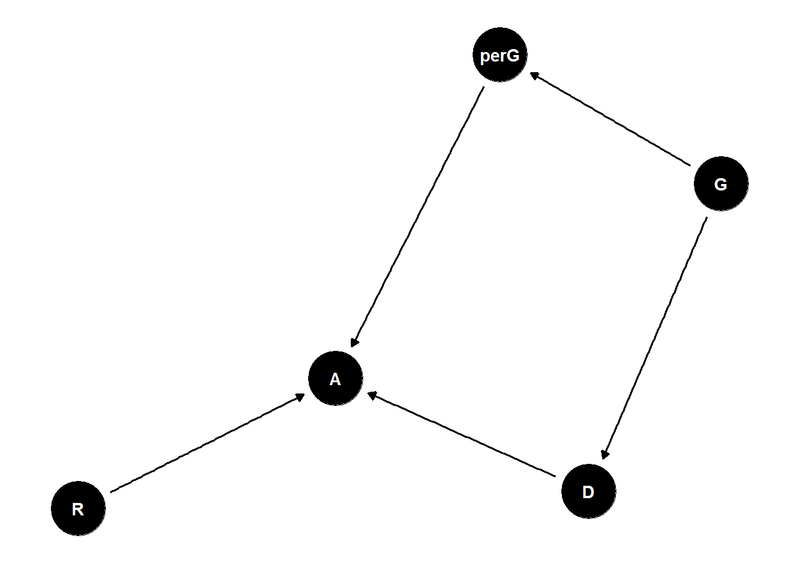

Lecture 09 - Modeling Events
Rose / Thorn
Rose:
Thorn:
Modeling Events
NOTE: read causal foundations of bias, fairness, and …
observations are counts
unknowns are possibilities, odds
everything is interacting
“log-odds” scale
Estimand: what is the effect of gender on university admissions?
perception of gender by admissions officer is what truly matters here
total effect of discrimination is what people experience
direct discrimination: status-based (referees are biased for or against certain gender)
indirect discrimination: structural (gender influences what discipline you are interested in and that discipline is underfunded)
quite often, the thing we are able to estimate is not what we want (total effects are easier to estimate but subpaths are interesting and important to understanding equity)
many unobserved confounds in this setup
Generative Model:
N <- 1000 # number of applicants
G <- sample(1:2, size = N, replace = T) # gender distribution
D <- rbern(N, ifelse(G==1, 0.3, 0.8)) + 1 #gener 1 tends to apply to appartment 1, 2 to 2
accept_rate <- matrix(c(0.1, 0.3, 0.1, 0.3), nrow = 2) # matrix of acceptance rates [dept, gender]
A <- rbern(N, accept_rate[D,G]) # simulate acceptanceModeling Events
we observe: count of events
we estimate: probability (or log-odds) of events
- like the globe tossing model, but need “proportion of water” stratified by other variables
Generalized Linear Models
linear models: expected value is additive “linear” combination of parameters
generalized linear models: expected value is some function of an additive combination of parameters
works because normal distribution is unbounded on both sides
when you have probabilities, which are bounded by 0 and 1, you make the expected value a function of the additive model
choosing the function so that it works well is the art of linear models
\[ Y_i \sim Bernoulli (p_i) \\ f(p_i) = \alpha + \beta_XX_i + \beta_Z Z_i \\ p_i = f^{-1}(\alpha + \beta_XX_i + \beta_Z Z_i ) \]
- p = probability of the event
f is the link function - links parameters of distribution to linear model
f-1 is the inverse link function
- the probability = inverse link function
distributions: relative number of ways to observe data, given assumptions about rates, probabilities, slopes, etc.
distributions are matched to constraints on observed variables
link functions are matched to distributions, essentially automatically matched to distributions
exponential distribution - the time to an event that has a constant rate. Values you sample from exponential distribution are latencies/rates (continuous data above one)
process that produces events and then you count those events = binomial distribution
don’t know maximum number of counts = poisson (special case of binomial)
sum exponential processes = gamma
large means of gamma distribution = normal distribution
distribution you want is governed by the constraints you assume about your variable
you cannot test if your data are normal
need to think about constraints and match to distributions
Logit Link
log-odds = logit link
\[ logit(p_i) = log \frac{p_i}{1-p_i} \]
Bernoulli/binomial models most often use the logit link
\[ Y_i \sim Bernoulli (p_i) \\ logit(p_i) = \alpha + \beta_XX_i + \beta_Z Z_i \\ p_i = logit^{-1}(\alpha + \beta_XX_i + \beta_Z Z_i ) \]
linear model output is on the “log-odds scale”
harsh scale (S-shaped curve)
by the time you reach -4 on the scale it means hardly ever, and -6 is never (opposite on the other side)
Logistic Priors
logit link compresses parameter distributions
on log-odds scale, above +4 = almost always, below -4 = almost never
- therefore, tighter priors are better
Statistical Model:
\(A_i \sim Bernoulli(p_i)\)
\(logit(p_i) = \alpha [G_i, D_i]\)
- this creates a matrix
\(\alpha_{j,k} \sim Normal(0,1)\)
# generative model, basic mediator scenario
N <- 1000 # number of applicants
# even gender distribution
G <- sample( 1:2 , size=N , replace=TRUE )
# gender 1 tends to apply to department 1, 2 to 2
D <- rbern( N , ifelse( G==1 , 0.3 , 0.8 ) ) + 1
# matrix of acceptance rates [dept,gender]
accept_rate <- matrix( c(0.1,0.3,0.1,0.3) , nrow=2 )
accept_rate <- matrix( c(0.05,0.2,0.1,0.3) , nrow=2 )
# simulate acceptance
p <- sapply( 1:N , function(i) accept_rate[D[i],G[i]] )
A <- rbern( N , p )
# total effect gender
dat_sim <- list( A=A , D=D , G=G )
m1 <- ulam(
alist(
A ~ bernoulli(p),
logit(p) <- a[G],
a[G] ~ normal(0,1)
), data=dat_sim , chains=4 , cores=4 )
precis(m1,depth=2)
# direct effects
m2 <- ulam(
alist(
A ~ bernoulli(p),
logit(p) <- a[G,D],
matrix[G,D]:a ~ normal(0,1)
), data=dat_sim , chains=4 , cores=4 )
precis(m2,depth=3)
# aggregate the dat_sim for binomial instead of Bernoulli
x <- as.data.frame(cbind( A=dat_sim$A , G=dat_sim$G , D=dat_sim$D ))
head(x,20)
dat_sim2 <- aggregate( A ~ G + D , dat_sim , sum )
dat_sim2$N <- aggregate( A ~ G + D , dat_sim , length )$A
m2_bin <- ulam(
alist(
A ~ binomial(N,p),
logit(p) <- a[G,D],
matrix[G,D]:a ~ normal(0,1)
), data=dat_sim2 , chains=4 , cores=4 )
precis(m2_bin,3)Logistic & Binomial Regression with Data
logistic is Bernoulli - binary 0, 1
binomial is count 0, N
both have logit link and are equivalent for inference
data(UCBadmit)
d <- UCBadmit
dat <- list(
A = d$admit,
N = d$applications,
G = ifelse(d$applicant.gender=="female",1,2),
D = as.integer(d$dept)
)
# total effect gender
mG <- ulam(
alist(
A ~ binomial(N,p),
logit(p) <- a[G],
a[G] ~ normal(0,1)
), data=dat , chains=4 , cores=4 )
precis(mG,2)
# direct effects
mGD <- ulam(
alist(
A ~ binomial(N,p),
logit(p) <- a[G,D],
matrix[G,D]:a ~ normal(0,1)
), data=dat , chains=4 , cores=4 )
precis(mGD,3)
# check chains
traceplot(mGD)
trankplot(mGD)
# contrasts
# on probability scale
post1 <- extract.samples(mG)
PrA_G1 <- inv_logit( post1$a[,1] )
PrA_G2 <- inv_logit( post1$a[,2] )
diff_prob <- PrA_G1 - PrA_G2
dens(diff_prob,lwd=4,col=2,xlab="Gender contrast (probability)")
post2 <- extract.samples(mGD)
PrA <- inv_logit( post2$a )
diff_prob_D_ <- sapply( 1:6 , function(i) PrA[,1,i] - PrA[,2,i] )
plot(NULL,xlim=c(-0.2,0.3),ylim=c(0,25),xlab="Gender contrast (probability)",ylab="Density")
for ( i in 1:6 ) dens( diff_prob_D_[,i] , lwd=4 , col=1+i , add=TRUE )
abline(v=0,lty=3)
# marginal effect of gender perception (direct effect)
# compute department weights via simulation
# we can just compute predictions as if all applications had been perceived as men
# and then again as if all had been perceived as women
# difference is marginal effect of perception, beause does not change department assignments (G -> A only, no G -> D)
# OLD WRONG CODE!
#p_G1 <- link( mGD , data=list(N=dat$N,D=dat$D,G=rep(1,12)) )
#p_G2 <- link( mGD , data=list(N=dat$N,D=dat$D,G=rep(2,12)) )
# NEW CORRECT CODE
# number of applicatons to simulate
total_apps <- sum(dat$N)
# number of applications per department
apps_per_dept <- sapply( 1:6 , function(i) sum(dat$N[dat$D==i]) )
# simulate as if all apps from women
p_G1 <- link(mGD,data=list(
D=rep(1:6,times=apps_per_dept),
N=rep(1,total_apps),
G=rep(1,total_apps)))
# simulate as if all apps from men
p_G2 <- link(mGD,data=list(
D=rep(1:6,times=apps_per_dept),
N=rep(1,total_apps),
G=rep(2,total_apps)))
# summarize
dens( p_G1 - p_G2 , lwd=4 , col=2 , xlab="effect of gender perception" )
abline(v=0,lty=3)
# show each dept density with weight as in population
w <- xtabs( dat$N ~ dat$D ) / sum(dat$N)
w <- w/max(w)
plot(NULL,xlim=c(-0.2,0.3),ylim=c(0,25),xlab="Gender contrast (probability)",ylab="Density")
for ( i in 1:6 ) dens( diff_prob_D_[,i] , lwd=2+8*w[i]^3 , col=1+i , add=TRUE )
abline(v=0,lty=3)Post-Stratification
description, prediction, and causal inference often require post-stratification
way to predict what the intervention will do to a specific population
post-stratification = re-weighting estimates for target population
for university example, we would reweight the application numbers to each department
Discrimination
there are large structural effects
distribution of applications can also be a consequence of discrimination but data cannot respond to this question
confounds here are likely
Survival Analysis
another way of modelling events but we care about the time it took for an event to happen instead of number of times it happened
cannot ignore censored cases (left-censored = don’t know when time started, right-censored = observation ended before event)
- ignoring leads to inferential error
exponential or gamma distribution
exponential for single part failure
gamma for multiple part failure
inverse rate is average waiting time in this example
\[ D_i \sim Exponential(\lambda_i) \\ p(D_i|\lambda_i) = \lambda_iexp(-\lambda_iD_i) \]
If the event happened we use the cumulative distribution (CDF) from the exponential - probability event before-or-at time x
if the event didn’t happen yet (censored) use complementary cumulative distribution (CCDF) - probability not-event before-or-at time x
- for any time on the x axis, how many cats have not yet been adopted
\[ D_i |A_i = 1\sim Exponential(\lambda_i) \\ D_i|A_i = 0 \sim Exponential-CCDF(\lambda_i) \\ \lambda_i = 1/\mu_i \\ log\ \mu_i = \alpha_{CID[i]} \]
First line is observed adoptions, second line is not-yet adoptions
CID = colour id
\(1/\mu_i\) is to get average waiting time for each cat
D = days at shelter, A = day at adoption